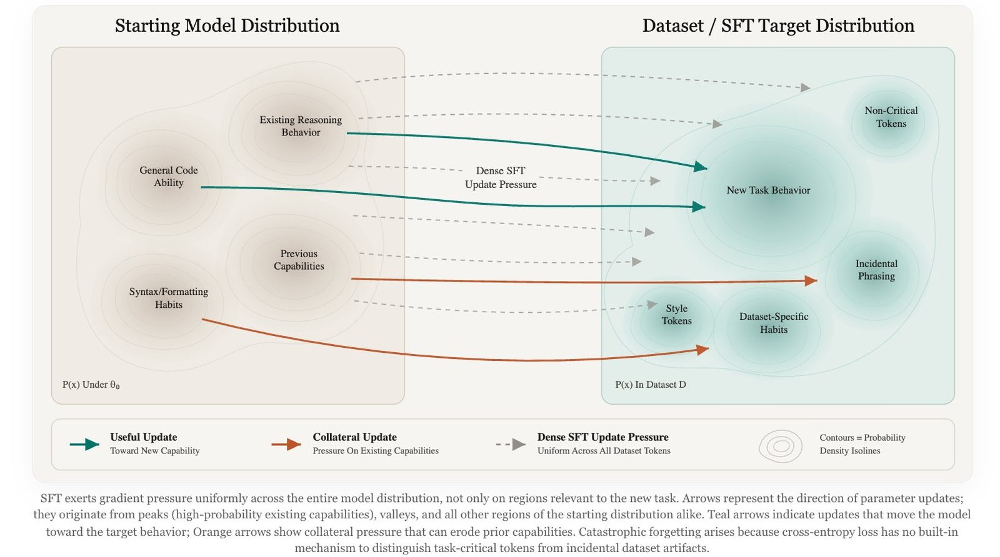
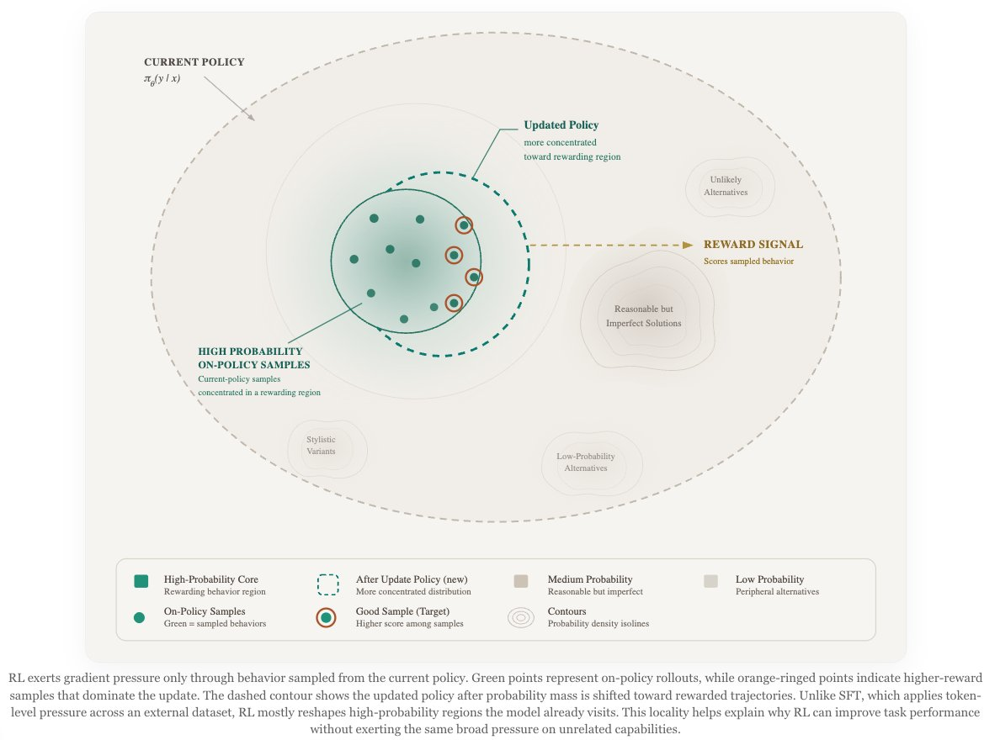
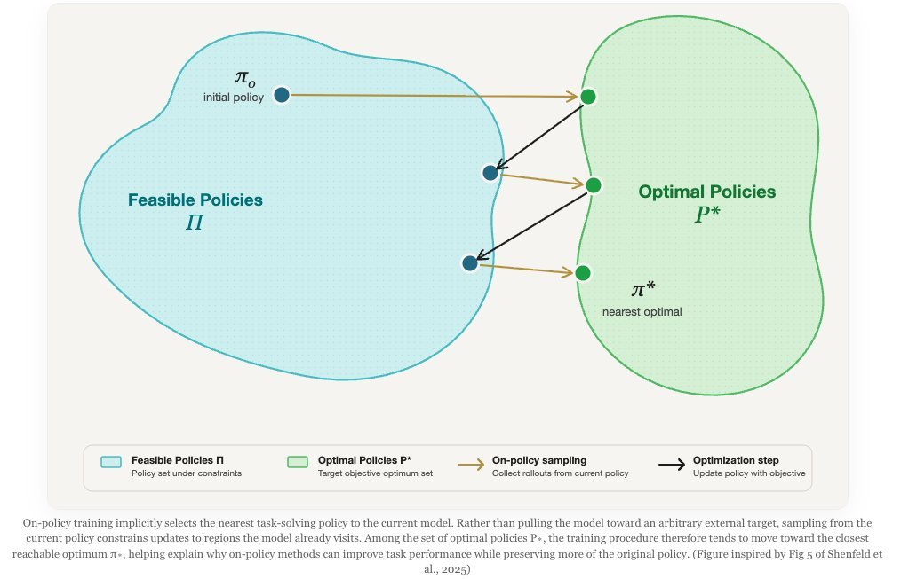
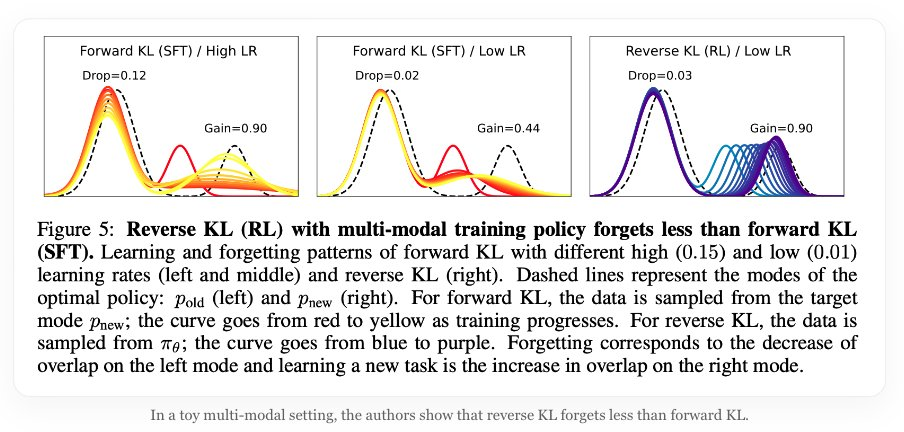
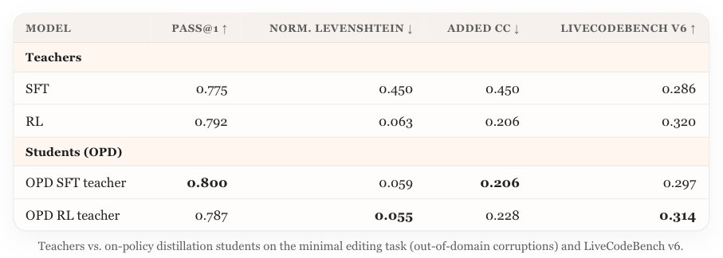
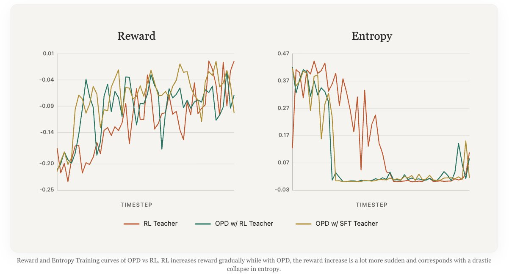
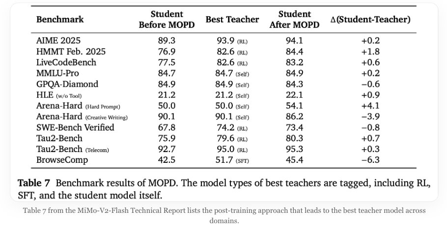
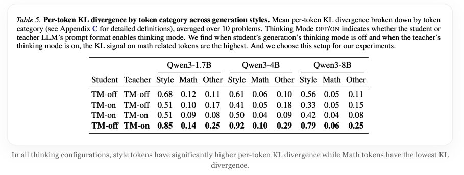
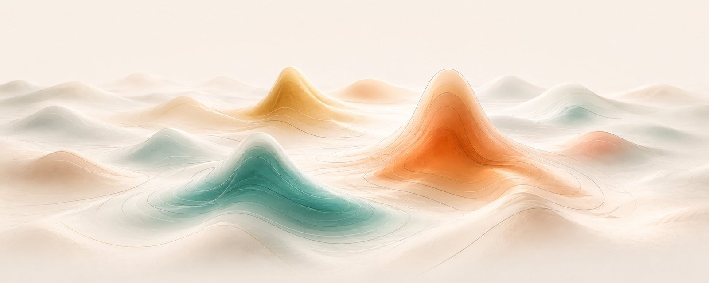

SFT, RL, and On-Policy Distillation Visual Notes
Note: the local X export only yielded article media assets, not a clean static article body. This file preserves the locally available figures and reconstructs the prose around those figures for wiki ingestion.
Core Frame
The article contrasts three ways of moving a model during post-training: supervised fine-tuning on a dataset target, reinforcement learning from current-policy rollouts, and on-policy distillation where a teacher scores the student's own samples.
The key axis is not simply whether the method is called distillation or RL. It is where the training samples come from, how dense the learning signal is, and whether the update pressure is aimed at task-critical behavior or also at incidental formatting, style, and dataset artifacts.
SFT As Dense Forward-KL Pressure
SFT applies token-level pressure across the whole target distribution. This can be useful when the dataset reliably encodes the desired behavior, but it also gives cross-entropy no native mechanism for separating capability-bearing tokens from incidental phrasing or style.
In the article's geometry, SFT pulls broad regions of the starting model distribution toward the dataset distribution. That broad pressure is one reason SFT can quickly teach a task while also risking capability erosion or overfitting to dataset-specific habits.
RL As Sparse On-Policy Pressure
RL samples from the current policy and scores sampled behavior. This means the update is tied to states the model actually visits, so improvements can compound as the policy changes.
The tradeoff is sparsity and cost: reward is often assigned to whole sampled trajectories or outcomes rather than every token. The article frames RL as less likely than SFT to broadly overwrite unrelated regions because the update passes through current-policy samples.
OPD And MOPD
On-policy distillation combines those two properties. The student still generates the rollout, but a same-family teacher supplies a dense token-level signal on the sampled tokens, often with a reverse-KL flavor.
The figures cite small empirical anchors for this claim: OPD students on a minimal-editing task can approach or beat their teachers on some columns, while MOPD benchmark results from MiMo-V2-Flash show a post-MOPD student recovering or exceeding teacher performance on several domains.
Token-Level Caveats
The thinking-mode KL table is a warning about what dense teacher signals may actually emphasize. Across the shown Qwen3 sizes, style tokens receive substantially higher per-token KL than math tokens, so a nominally capability-oriented distillation signal can still concentrate on formatting and mode-control tokens.
The reward and entropy curves suggest a second caveat: OPD can create a fast reward jump coupled with a sharp entropy collapse. That makes the method efficient, but it also makes KL control, teacher choice, and rollout calibration important.
Figures








